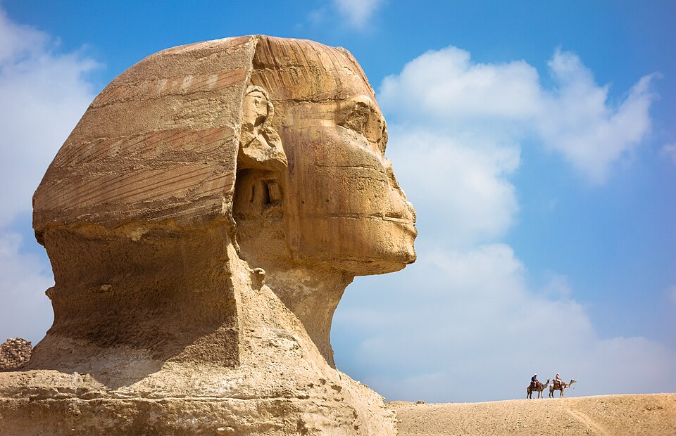

Древнейшая колоссальная статуя
Великий сфинкс — древнейшая сохранившаяся на Земле монументальная скульптура. Около 2559 года до н. э. (IV династия) его высекли из монолита известняка: колоссальный лев, лежащий на песке, 73 м длиной и 20 м высотой. Вокруг тела вырубили котлован, а его блоки ушли на строительство соседних храмов; потому сфинкс лежит ниже окружающей поверхности. Лицо, по консенсусу учёных, — фараон Хафра, чья пирамида стоит рядом. Версии, что сфинкс делал Хуфу или изображает его, — меньшинство.
Хоремакхет: страж горизонта
Сфинкс обращён лицом к Нилу и восходящему солнцу. Лев был символом солнечного божества, а фараона изображали львом, истребляющим врагов: сфинкс — страж вечного покоя погребённых вокруг него царей. Окрестные храмы сначала посвящали солнцу Ра; лишь в Новом царстве скульптуру стали отождествлять с Гором — как Хоремакхета, «Гора в Горизонте», и Аменхотеп II построил к северо-востоку от сфинкса особый храм.
Сон Тутмоса IV
В Новом царстве сфинкса освободил от песка царевич, ставший фараоном Тутмосом IV. Стела Сна, поставленная между лапами сфинкса, рассказывает, что на полуденной прогулке он заснул в тени божества, и во сне бог заговорил с ним, как отец с сыном: «Я — твой отец Хепри-Ра-Атум, и я дарую тебе владычество над моей землёй… Спаси меня от песков, что покрыли меня». Царевич расчистил статую, и бог пообещал ему трон — обещание сбылось: Тутмос IV правил Египтом.
Нос — не Наполеон
До нас сфинкс дошёл без носа. По аль-Макризи, в 1378 году фанатик, явившийся молиться «идолу», в гневе отбил ему нос. Легенда о том, что нос отстрелила пушечным ядром армия Наполеона в 1798 году, не выдерживает проверки: рисунки датского путешественника 1737 года уже показывают безносого сфинкса.
Песок и три тысячи лет реставраций
Ветер переносит по плато песок, и тот оседает в котловане вокруг статуи; расчистка сфинкса — бесконечная работа на тысячи лет. В 1920–1930-х Эмиль Барайз руководил раскопками и реставрацией: в 1925 году статую полностью освободили от песка, трещины на лице заполнили бетоном, укрепили шею. Сфинкс утратил и церемониальную бороду (фрагмент — в Британском музее), и часть головного убора. Легенда о «Зале записей» — тайном хранилище истории под сфинксом, будто открытом неким Кэйсом, — не подтверждена: такой камеры не найдено, историю считают мифом.